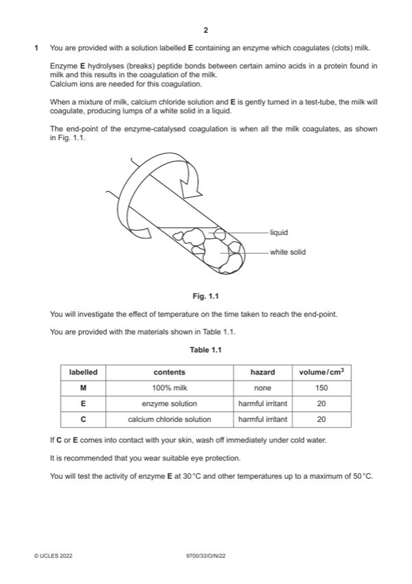

Question 1

Original paper page 2
Part 1(a)(i) — solution
1 states 35, 40, 45 ; 1
Mark points
- Include the ideas shown in the solution above.
Part 1(a)(ii) — solution
1 contents of the test-tubes reaching the temperature of the water in the water-bath ; 1
Mark points
- Include the ideas shown in the solution above.
Part 1(a)(iii) — solution
1 heading for independent variable: temperature / °C and before heading for dependent variable and no units in body of 5
table and heading for dependent variable: time / seconds ;
Mark points
- Include the ideas shown in the solution above.
Part 1(a)(iv) — solution
1 states independent variable as temperature ; 1
Mark points
- Include the ideas shown in the solution above.
Part 1(a)(v) — solution
1 uses boiled and cooled enzyme or replaces enzyme with water ; 1
Mark points
- Include the ideas shown in the solution above.
Part 1(a)(vi) — solution
1 standardise temperature by using a stated temperature ; 3
Mark points
- Include the ideas shown in the solution above.
Part 1(b)(i) — solution
1 1. x-axis: % enzyme concentration 4
and
y-axis: activity of enzyme (/) au ;
Mark points
- Include the ideas shown in the solution above.
Part 1(b)(ii) — solution
1 correct estimate based on candidate’s graph ; 2
Mark points
- Include the ideas shown in the solution above.
Part 1(b)(iii) — solution
1 as enzyme concentration increases the enzyme activity increases ; 1
Mark points
- Include the ideas shown in the solution above.
Part 1(b)(iv) — solution
1 more enzyme present, more active sites ; 2
Mark points
- Include the ideas shown in the solution above.